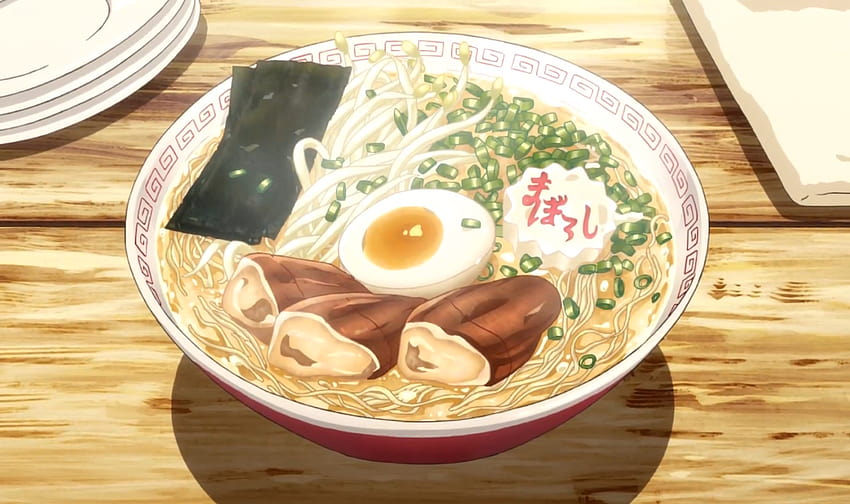

Ramen

Description:
Ramen is a popular and flavorful Japanese noodle soup dish.
Ramen is highly customizable, and regional variations exist throughout Japan and worldwide. It's enjoyed for its rich flavors, comforting warmth, and versatility. It's often served in restaurants, from street food vendors to high-end ramen shops, and it can also be prepared at home using instant ramen or homemade noodles and broths. Ramen has become a beloved and iconic dish not only in Japan but in many other parts of the world, reflecting the versatility and adaptability of this comforting noodle soup.
Ingredients:
For the Broth:
- Chicken or pork bones (for tonkotsu or shoyu broth) or vegetable broth (for vegetarian ramen).
- Aromatics like ginger, garlic, and onions.
- Soy sauce (for shoyu ramen) or miso paste (for miso ramen).
- Salt and, optionally, sesame oil.
For the Noodles:
- Fresh ramen noodles or dried ramen noodles (available in most Asian grocery stores). You can also use instant ramen noodles, but fresh noodles are preferred for the best quality.
For Toppings:
- Slices of chashu (pork belly or other meat).
- Soft-boiled eggs (marinated or plain).
- Sliced scallions.
- Bamboo shoots (menma).
- Nori seaweed sheets.
- Bean sprouts.
- Sweet corn kernels (optional).
- Additional vegetables of your choice, such as spinach or mushrooms.
- Togarashi or chili paste for added spice (optional).
- Sesame seeds (optional).
For Garnish and Seasoning:
- Green onions, sliced thinly.
- Fresh garlic, minced (for those who like extra garlic flavor).
- Sesame oil.
- Rice vinegar (for a touch of acidity).
Steps:
Preparing the Broth:
- Boil the Bones: If you're using chicken or pork bones, place them in a large pot of water. Bring it to a boil, then reduce to a simmer. Skim off any impurities that rise to the surface. Simmer for several hours (4-6 hours for a richer broth), adding aromatics like ginger, garlic, and onions during the last hour.
- Season the Broth: Season the broth with soy sauce and salt to taste. You can also add a splash of sesame oil for extra flavor.
Cooking the Noodles:
- Prepare Noodles: While the broth is simmering, cook the fresh or dried ramen noodles according to the package instructions. Drain and set them aside.
Preparing Toppings:
- Chashu: Slice the chashu into thin pieces. You can either make your own by slow-cooking pork belly or use pre-made options from the store.
- Soft-Boiled Eggs: If desired, marinate soft-boiled eggs in soy sauce or your preferred marinade for extra flavor. Slice them in half when serving.
- Other Toppings: Slice scallions, prepare bamboo shoots, nori sheets, bean sprouts, and any other toppings you like.
Assembling the Ramen:
- Bowl It: Place the cooked noodles in a serving bowl.
- Ladle the Broth: Carefully pour the hot broth over the noodles. Ensure the broth covers the noodles.
- Add Toppings: Arrange the chashu, soft-boiled egg halves, sliced scallions, bamboo shoots, nori, bean sprouts, and any other toppings you prepared on top of the noodles.
- Garnish: Drizzle a little sesame oil, and add a pinch of sesame seeds (if desired). You can also add minced fresh garlic and a dash of rice vinegar for extra flavor.
- Serve Hot: Ramen is best when served hot. Enjoy your homemade ramen!